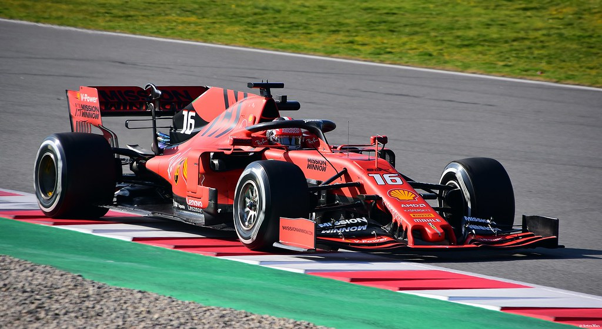

Latest News
Baku becomes latest race to be postponed
The wait for the 2020 season to get underway has been extended by another week with the news that the Azerbaijan Grand Prix has now been postponed Following all of the other cancellations and postponements, Baku was set to host the first race of a truncated 2020 season on 7 June, but that will no longer be the case of yup, you guessed it, the coronavirus pandemic. Unlike the straight cancellations of Australia and Monaco, Azerbaijan joins Bahrain, Vietnam, China, Netherlands, and Spain in being merely postponed, with the hope if being slotted into a revised calendar later in the season if possible.Read More...